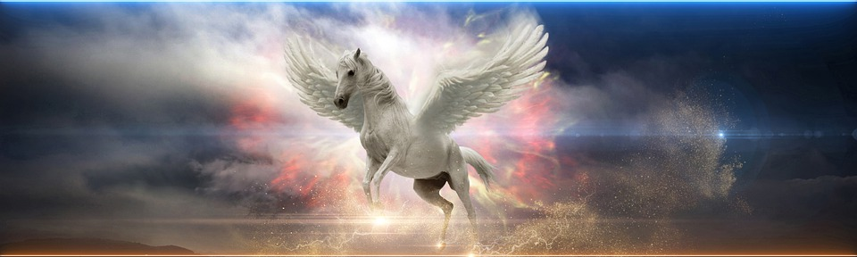

Unicorns are often portrayed in media as a creature with the body of a horse, but with a pointed, spiralling horn on its forehead. They’re described as having a white coat, and either a white mane or a rainbow coloured one. They are also oftentimes depicted as being connected to rainbows, and both unicorns and rainbows have been linked to peace and happiness. They are also linked to youth, likely because children are one of the biggest audiences of unicorns in media.
Unicorns have appeared in several parts of the world even in the early days of their existence, including in Mesopotamia, India, China, and Greece. Because of this, it’s difficult to pinpoint the exact location where unicorns first originated, so it’s safe to say that the unicorn we know and love today is a mixture of many different cultures.
The blood of the unicorn is arguably the one of the most powerful aspects of a unicorn, according to some works of literature. For example, In the book/movie series “Harry Potter”, unicorn blood is said to “keep you alive, even if you are an inch from death”. This shows just how powerful the unicorn must be, if just its blood can hold such properties.
Unicorns are very popular amongst children, as they are seen as beautiful, majestic, and innocent animals. Many children’s birthday parties, for example, have been centered around a unicorn theme, and certain characters have only added to this trend. For example, Agnes from “Despicable Me” was obsessed with unicorns, and because of this, people constantly saw the creatures in a good light, only making people like them more.
Pegasus is a mythical creature that, like the unicorn, is mainly resemblent of a horse. However, unlike the unicorn, it has no horn on its forehead, but rather two large wings on either side of its body. Pegasus is a prominent character in Greek Mythology, as his father is said to be the God of the Sea, Poseidon. There is a constellation in the sky that is named after Pegasus, and in Greek Mythology it’s believed that this constellation was Zeus’s way of honouring Pegasus.
An artist’s depiction of Pegasus.
Return to the top of the page
Browse the list of mythical creatures.